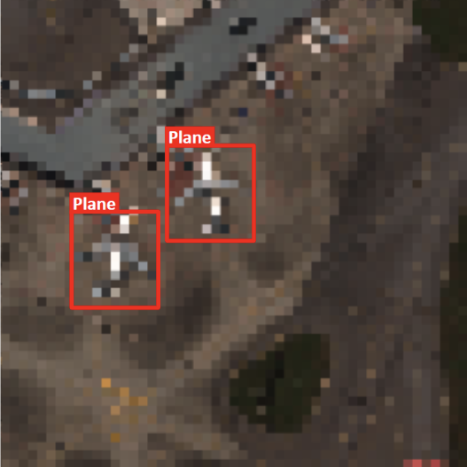
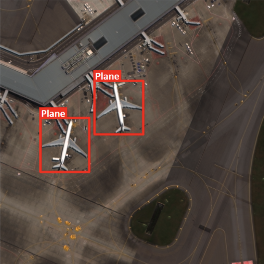

Graduate qualifying project · BAE Systems
Satellite Object Detection
How much image detail does an object detector need, and how does that change by class?


The same scene at two resolutions. The annotations come from the original project figure.
Approach
Python, YOLOv8 Fine-Tuning, Image Preprocessing, Model Evaluation
- Prepare the data. Tile satellite images and convert annotations to YOLO format.
- Fine-tune the detector. Train a YOLOv8 model and evaluate it on progressively degraded imagery.
- Compare performance by class. Use the performance curve to look for the point where additional resolution yields smaller gains.